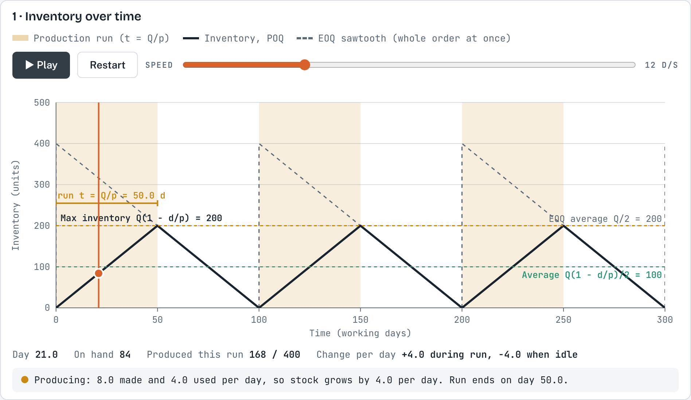
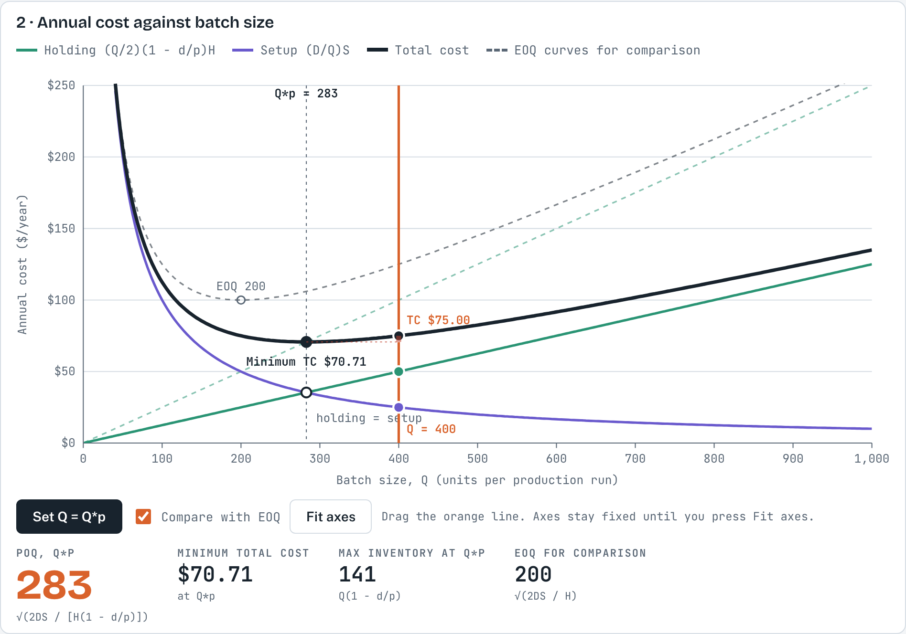
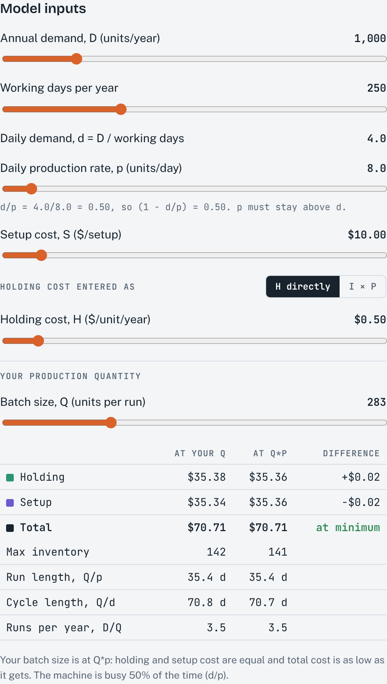
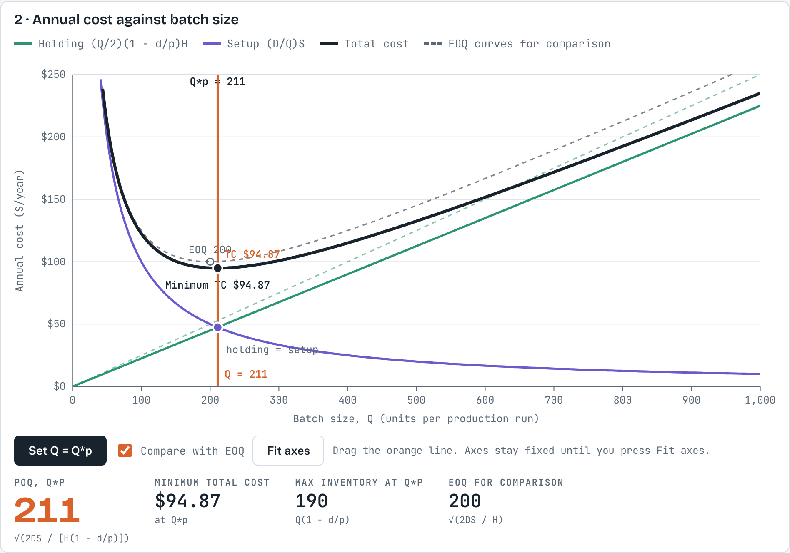

1About this simulation
In the basic EOQ model the whole order arrives at once. When a firm produces an item itself, or a supplier delivers it continuously, the units arrive gradually at the production rate p while customers keep using them at the demand rate d. Stock builds up only at p − d during a production run, so it never reaches the batch size Q. The production order quantity (POQ) model finds the batch size that minimises the annual setup and holding cost in this situation.
The simulation has two linked charts. The first animates the inventory level over time, run by run. The second draws the holding, setup and total cost curves against the batch size, with the EOQ curves for comparison. You can change demand, the production rate and the costs, and drag your own batch size.
After working through this guide, you should be able to:
- explain why inventory peaks at Q(1 − d/p) rather than at Q when units arrive gradually;
- calculate the production order quantity, the maximum inventory, the minimum total cost, the run length and the number of runs per year;
- explain why the POQ is larger than the EOQ and its total cost lower;
- predict how the POQ changes when the production rate, demand or costs change.
2Theory background
Assumptions
The model keeps the assumptions of the basic EOQ model (known and constant demand, known lead time, no quantity discounts, no stockouts) with one change: the order is received gradually over a production run, at a constant rate p that is larger than the demand rate d. During the run, units are produced and used at the same time.
Notation
The notation is the same as in the course formula sheet.
| Symbol | Meaning |
|---|---|
| D | Annual demand (units/year) |
| d | Daily demand rate (units/day) = D / working days per year |
| p | Daily production (or delivery) rate (units/day), with p > d |
| S | Setup cost per production run ($/setup) |
| H | Holding cost per unit per year ($/unit/year); H = I × P if given as a rate |
| Q, Q*p | Batch size (units per run); production order quantity |
| t | Length of a production run (days) = Q / p |
Why the peak is lower
A run of Q units takes t = Q / p days. During those days stock grows by p − d units per day, so at the end of the run it reaches (p − d) × Q/p = Q(1 − d/p). The machine then stops and stock falls at d per day until it reaches zero, when the next run starts. A full cycle lasts Q / d days.
Costs and the production order quantity
As in the EOQ model, total cost is lowest where holding cost equals setup cost. The only difference is the factor (1 − d/p), which is below 1. Each unit in the batch costs less to hold, so it pays to run larger batches than the EOQ, and the minimum total cost is lower. Because Q*p = EOQ / √(1 − d/p), the POQ is always at least as large as the EOQ. When p becomes very large, (1 − d/p) approaches 1 and the POQ falls back to the EOQ.
Worked example (default settings)
D = 1,000 units/year, 250 working days (so d = 4 units/day), p = 8 units/day, S = $10/setup, H = $0.50/unit/year.
- 1 − d/p = 1 − 4/8 = 0.5.
- Q*p = √(2 × 1,000 × 10 / [0.50 × 0.5]) = √80,000 = 283 units (EOQ = 200).
- Maximum inventory = 283 × 0.5 = 141 units; average inventory = 71 units.
- Holding cost = (283/2) × 0.5 × 0.50 = $35.36 and setup cost = (1,000/283) × 10 = $35.36, so TC = $70.71 (EOQ: $100).
- Run length t = 283 / 8 = 35.4 days; cycle length = 283 / 4 = 70.7 days; about 3.5 runs per year. The machine is busy d/p = 50% of the time.
3How to use the simulation
Getting started
- Set annual demand D and the working days per year; the daily demand d = D / working days is shown below them.
- Set the daily production rate p. It must stay above d, otherwise stock would never build up; the slider stops just above d.
- Set the setup cost S and the holding cost, either as H directly or as I × P.
- Choose your batch size Q with the slider, or drag the orange line on the cost chart. Set Q = Q*p moves it to the optimum.
- In the inventory chart, press Play to run the clock, Restart to go back to day 0, and use Speed to change the pace.
- Compare with EOQ shows the EOQ sawtooth (same Q, whole order at once) and the EOQ cost curves as dashed lines. Fit axes rescales the cost chart.
What you see

- Shaded bands: production runs. Black line: inventory. Orange cursor: the clock while the animation runs, with the live numbers and the current phase below the chart.
- Dashed lines: the maximum inventory Q(1 − d/p) and the average inventory, and (with Compare with EOQ) the EOQ sawtooth and its average Q/2.

- Green line: holding cost (Q/2)(1 − d/p)H. Purple curve: setup cost (D/Q)S. Black curve: total cost.
- Dotted line and black dot: Q*p and the minimum total cost. Orange line: your Q; the red bar shows its extra cost.
- The table under the inputs compares your Q with Q*p: costs, maximum inventory, run length, cycle length and runs per year.

Try this
A. One production cycle
- With the default inputs and Q = 400, press Play. Pause during a run and check the on-hand stock against (p − d) × day. On which day does the run end, and when does the next one start?
- Calculate the maximum and average inventory for Q = 400 by hand and compare them with the chart. How do they compare with the EOQ sawtooth for the same Q?
B. The cost curves
- Calculate Q*p and TC for the defaults, then press Set Q = Q*p to check. By how much is the POQ larger than the EOQ, and how much cheaper is it?
- Set Q = 400. Which cost dominates, and by what percentage is total cost above the minimum?
C. Changing the production rate
- Raise p from 8 to 40 units/day. What happens to Q*p, the peak and the total cost? Explain why the curves move towards the EOQ curves.
- Lower p to 5 units/day. What happens to Q*p, the run length and the share of time the machine is busy?
- Return p to 8 and raise D to 1,500 (d = 6). Why does Q*p grow much more than the EOQ?

4Check your understanding
- A plant has annual demand D = 12,000 units over 300 working days and can produce p = 100 units per day. S = $60 per setup and H = $2 per unit per year. Calculate Q*p, the maximum inventory, the minimum total cost, the length of a run and the number of runs per year.
- For the same plant, what is the EOQ? Explain in one sentence why the two answers differ.
- With the default inputs, the production rate doubles from 8 to 16 units per day. Does Q*p rise or fall? Calculate the new value.
- Why must the production rate p be larger than the daily demand d for the model to make sense?
- A manager says: "Since our batches are larger than the EOQ, we are holding too much stock." Is this correct? Explain using the maximum inventory.
References
MSB255 Supply Chain and Operations Management: course materials. University of Stavanger.
Heizer, J., Render, B., & Munson, C. (2017). Operations Management: Sustainability and Supply Chain Management (12th ed.). Pearson.
Answers and expected resultsTry the exercises first, then open to check
Simulation results
| Run | Result |
|---|---|
| A1 Q = 400 | Run t = 400/8 = 50 days, so stock is 4 × day during the run (84 on day 21). The run ends on day 50; stock reaches zero and the next run starts on day 100. |
| A2 Q = 400 | Maximum inventory = 400 × 0.5 = 200, average = 100. The EOQ sawtooth for Q = 400 peaks at 400 with average 200, twice as high. |
| B1 Defaults | Q*p = 283 (EOQ 200, 41% larger); TC = $70.71 versus $100, about 29% cheaper. |
| B2 Q = 400 | Holding $50, setup $25, TC $75: holding cost dominates; 6.1% above the minimum. |
| C1 p = 40 | 1 − d/p = 0.9; Q*p = 211, peak 190, TC $94.87. A fast machine fills the batch almost at once, like an EOQ delivery. |
| C2 p = 5 | 1 − d/p = 0.2; Q*p = 447, peak 89, TC $44.72; run length 89 days of a 112-day cycle; the machine is busy 80% of the time. |
| C3 D = 1,500 | d = 6, 1 − d/p = 0.25; Q*p = 490 versus EOQ = 245. Higher demand raises both, and it also shrinks (1 − d/p), which raises the POQ further. |
Check your understanding
- d = 12,000 / 300 = 40 per day; 1 − d/p = 0.6. Q*p = √(2 × 12,000 × 60 / [2 × 0.6]) = √1,200,000 = 1,095 units. Maximum inventory = 1,095 × 0.6 = 657 units. TC = $657.27 holding + $657.27 setup = $1,314.53. Run length = 1,095 / 100 = 11.0 days; runs per year = 12,000 / 1,095 = 11.0.
- EOQ = √(2 × 12,000 × 60 / 2) = 849 units. The POQ is larger because units arrive gradually and some are used during the run, so each unit in the batch costs less to hold.
- It falls: 1 − d/p = 1 − 4/16 = 0.75, so Q*p = √(20,000 / [0.50 × 0.75]) = 231 units (from 283). A faster machine behaves more like an instant delivery.
- Stock only builds up at p − d per day. If p ≤ d the plant cannot keep up with demand, stock never accumulates, and the machine would have to run all the time.
- Not necessarily. The batch is larger, but the stock on hand never exceeds Q(1 − d/p). In the default example the POQ batch is 283, but the peak is only 141, lower than the EOQ peak of 200.